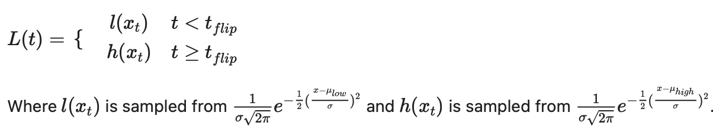
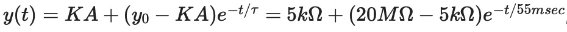
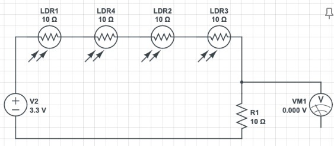
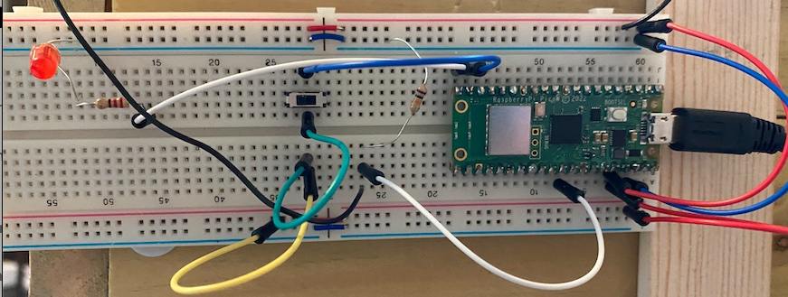
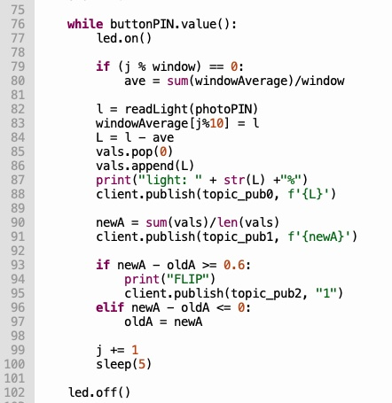
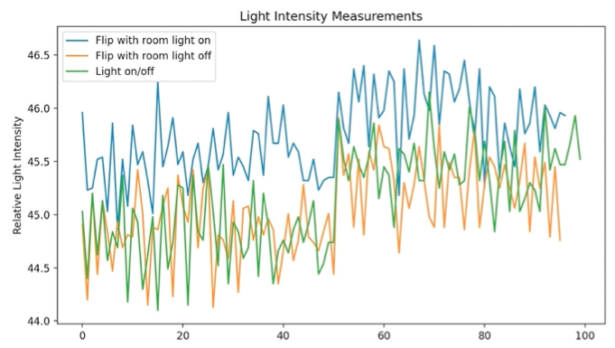
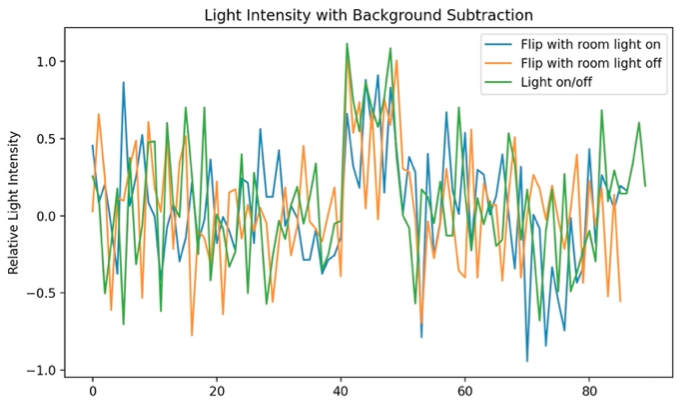
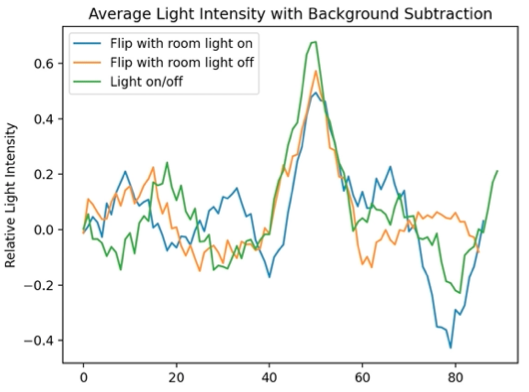
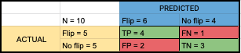

Tortoises are curious animals that often get themselves into trouble. When a tortoise flips over onto its back, it can not get up on its own. This situation can be fatal if the tortoise is not helped quickly. The possibility of a pet tortoise flipping is a constant worry for tortoise owners when they are away from home for long periods of time. The Tortoise Flip Detection System determines when Hector has flipped onto his back, and sends an alert via email to the owner. It also turns off the heat lamp over the tortoise enclosure so that Hector does not dehydrate as quickly, increasing his chance of survival. Live data can be viewed by clicking the link above.
The goals of this project were to non-invasively determine when a tortoise has flipped, alert the owner if a flip happens, and turn off the overhead lights.
Our Solution
The system we designed uses light reflected from Hector's bottom shell to indicate to photoresistors that he has flipped. We chose this design because it avoids the use of computer vision, and is not overly invasive to the tortoise. Four sensors were used, with one being placed above each corner of the rectangular tortoise enclosure. The photoresistors were pointed inwards at a 45 degree angle to maximize the area that each sensor could detect. Two overhead lights provide heat and UV radiation to Hector, so those were also used as the light source for the sensors. A Raspberry Pi Pico W microcontroller was used to control the system. Since this microcontroller only has 3 usable ADC pins, at least 2 of the photoresistors needed to be connected in series, however putting all 4 of the sensors in series proved to cause a noticeable difference in voltage when Hector was flipped. The system also includes a switch to turn data collection on and off if, for example, the owner needed to put food into the enclosure. In order to cause a distinguishable difference in light intensity when Hector flipped, reflective tape was placed on the bottom of his shell. This tape must be frequently replaced so that it doesn't harm the tortoise.
Phenomena of Interest
Physical Principles
The physical stimulus we are interested in is the tortoise flipping onto its back. Since we can not measure a tortoise’s position directly, we are using the light reflected from its shell to get information on its position.
Light is a form of electromagnetic radiation that can have different wavelengths, frequencies, and intensities. Visible light, or the light that humans can see, has wavelengths between 400 and 700 nm. Infrared radiation has longer wavelengths, and ultraviolet radiation has shorter wavelengths than visible light.
Static and Dynamic Behavior
Hector sleeps, walks, and flips throughout the day, therefore he exhibits dynamic behavior. As he moves, his orientation and positioning changes. In this project, the sensors rely on the orientation of the tortoise. When Hector is behaving as usual, his dark shell reflects minimal light from the overhead lamps. When Hector flips onto his back, the tape on the bottom of his shell passively produces more light for the sensors through reflection. In this situation, light intensity is perceived as dynamic, and the sensors must produce dynamic outputs. Even though light level will vary due to outside light changes, turning the room lights on and off and people in the room blocking light, the average light level will remain relatively stable. We are making the assumption that when Hector is behaving as usual, the light intensity follows a normal distribution centered at a low average. When light level changes quickly and with a large magnitude, the system knows Hector has flipped. We are making the assumption that the light intensity after flipping also follows a normal distribution, but with a higher average, since the light differences from outside conditions still exist. Therefore, we assume that most of the signals captured by the light sensor are stable and static. We focus more on the significant dynamic changes. The light distribution can be represented by a step function where L is the light intensity:
Signal Characteristics
Overall, the phenomenon we are interested in is whether or not Hector is flipped. This is represented by a binary value, 0 if he is not flipped and 1 if he is, which we will determine using light. Even though light itself has characteristics of a wave, light in this project does not. We are taking individual values of light and looking at the difference between them.
Sensors Being Utilized
Physical Principles
Photoresistor were chosen to measure light intensity because we are interested in seeing when the light bouncing off of Hector has changed. The electrical signal of the photoresistor varies with the intensity of light. A higher light intensity results in a lower resistance value and a higher voltage. Photoresistors contain photo-conductor material. When light hits this material, electrons gain enough energy to move from the semiconductor to the conduction band. This allows for more electric current to flow through the component, so resistance is decreased.
Static and Dynamic Behaviors
In this situation, light intensity is perceived as dynamic, and the sensor produces a dynamic output. This sensor can be characterized as first order because although it responds very quickly (2.8-18msec) to the stimulus, it still requires the storage of electrons. It's necessary that the time constant be low for the photoresistor, because light intensity changes very quickly. If the system responds too slowly, then we might miss important information about fast light intensity shifts. In this case we will not miss any information required for determining whether or not Hector has flipped, because his movement is much slower than the response time of the sensor. He also remains in his flipped position until he is unflipped.
Sensor Characteristics
The possible resistance ranges from 400 ohms (1000 lux) to 9 Kilo-ohms (10 lux). The sensor responds best with 500 to 600 nm wavelength light. It does not respond to light with wavelength under 400 nm, so the overhead UV light used for Hector’s enclosure should have little effect. Assuming the steady state response is 5 Kilo-ohms and the initial value is 20 mega-ohms (from datasheet), then the response can be measured as:
The data was retrieved from this datasheet. Photoresistors can be used in any situation where the light intensity or light intensity changes are needed. This includes applications such as lighting control systems, burglar alarm systems, and night lights.
Signal Conditioning
There are no requirements for the signal conditioning circuit to use the photoresistor for this project. Since we are not interested in knowing the actual lux value of our measurements, the nonlinearity of the transfer function is not important. Only a simple voltage divider is needed so that the voltage drop along the photoresistor is noticeable. A 10 kilo-ohm resistor was used.
 Sampling and Quantization
Sampling Rate Selection
The sampling rate for light measurements was chosen to be 0.2 Hz. Since we are only interested in the difference between the light measurement before and after Hector flips, it is not necessary that we record measurements of the actual flipping event. Therefore, the only factor affecting the sampling rate is how quickly we want to know that the tortoise has flipped. By taking a measurement every 5 seconds, the owner will be alerted soon after the tortoise has flipped.
Measurement Resolution
The measurement resolution for light measurements was chosen to be 12 bits. This means that the output voltage is represented by a value between 0 and 4095. Micropython has a built-in function that converts the value outputted by the ADC to 16 bits using bit-shifting. Even though the ADC can output 4096 different values, we will have 65536 different possible values corresponding to different light levels. Since the light level generally fluctuates within a small range, the resolution could be much smaller with similar results. This range is 43-49% relative light, or about 28180-31456 on the scale of 0-65535. This is a range of only 3277 numbers. Using 12 bits would suffice, but 16 bits works as well.
Signal Processing
The analog signal from the signal conditioning circuit goes directly to the built-in analog to digital converter. No analog signal processing is used in our system. Once converted to digital, the data is processed on the Raspberry Pi Pico in uPython. A sample of the code can be seen below.
Background subtraction is a method for extracting the important, changing information from the background information. This technique is mostly used in computer vision applications to separate the foreground image from background so that it can be further analyzed. In this project, the background information is the ambient lighting, and the foreground information is the light from Hector flipping. By subtracting the background, the foreground can be examined for a flipping event. Background subtraction is performed on the raw data by taking 10 data points at a time, finding the average, and then subtracting that average from each incoming data point. The average is updated every 10 timesteps. Slow changes in ambient lighting are removed, so that only large, rapid changes remain in the data. After background subtraction, a moving average is applied for noise reduction. The program determines that a flip has occurred when the average light intensity after background subtraction rises above 0.6 relative light intensity.
Experiments
Originally, we expected that the light distribution could be represented by a normal distribution. After combining several samples with the lights both on and off and the tortoise flipped and not flipped, we found that this assumption was correct. The following data show the distribution of light intensities in all four scenarios. The distributions are similar for each, but with slightly different averages depending on the lighting and flip status.
Comparison to assumptions
Room lights off Mean: 45.11%, Standard deviation: 0.37%
+tortoise flip Mean: 45.79%, Standard deviation: 0.35%
Room lights on Mean: 46.15%, Standard deviation: 0.40%
+tortoise flip Mean: 46.62%, Standard deviation: 0.35%
Background subtraction proved successful by removing slow-changing variations in lighting. The following figures show the raw data, data after background subtraction, and then the averaged data. You can see in the third figure below that all three scenarios (flip with light on, flip with light off, and the light turning on) have a similar peak. Using this data, the range of a light increase of 0.6 or greater relative intensity was determined to signify a flip. It is assumed that the room lights will only be turned on when the owner is in the room and the Tortoise Flip Detection System will not be in use, so this case can be ignored.
  Error
Since we were only interested in differences in light intensity and not exact values, uncertainty within the sensor was not an issue. The datasheet for this photoresistor also had no information on error or uncertainty. We evaluated the performance of the Tortoise Flip Detection system using the results of 10 trials. In 5 of the trials, the tortoise was flipped. For the other 5 trials, he was not flipped. Each trial lasted up to 30 seconds. A confusion matrix was created from the results, seen below.
Discussion
Write about discussion here
References
Write references here